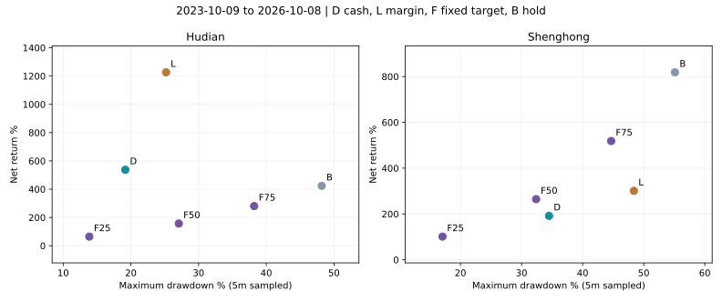

回撤降低：择时有效，还是仓位更低？
固定25%／50%／75%对照 · 248组复算 · 未修改默认
结论：近期沪电存在择时价值，更早历史则明显失效
沪电近三年，原现金策略平均仓位44.16%，净收益537.26%、最大回撤19.18%；固定50%仓位净收益156.82%、回撤27.08%。在承担较少平均持仓的同时，原策略收益更高、回撤更低，说明这段历史的优势不能完全用“仓位低”解释。
但2020年至2023年较早区间，原现金策略平均仓位36.2%，收益−20.02%、回撤59.42%；固定50%则收益19.70%、回撤39.15%。胜宏近三年，原现金策略平均38.15%仓位、收益191.85%、回撤34.50%；固定50%收益264.75%、回撤32.39%。择时并非稳定减险，在错误阶段反而放大损失。
平均仓位相近不等于风险完全相同：暴露时段、隔夜风险、尾部冲击和再平衡路径不同。本批是风险对照，不是精确的择时因果分解，也没有估算未来成功概率。
怎样做公平的低仓位对照
固定25%、50%、75%为预先指定的目标仓位，每天10:00尝试再平衡，保留原引擎5根K线执行窗口和低于100%目标时的3.5个百分点容忍区间。因此它们是“维持固定比例”的方案，不是第一天买一部分后永久不动，也不是每天恰好达到目标。
不使用RSI或财报门槛；相同本金100万元、佣金万1最低5元、印花税和过户费、5/10基点滑点、100股、T+1、前根5分钟量1%的成交上限和涨跌停。固定仓位无融资，现金利息假设为0，策略和固定仓位的分红均按20%简化扣税。原全仓基准仍为长期持有分红0%税假设，故本批重点与固定50%比较，避免税务口径差异主导结论。
另外，在每个区间开始前，用此前252个交易日原策略的平均实际仓位，四舍五入到1个百分点并限制在0%至100%，把它固定用于整个待检区间；只用过去信息，不能根据检验区间的收益重新定仓。更早历史没有足够前置数据，不生成这种对照。5和10基点测试共用此前5基点算出的固定仓位。
三年完整账户：2023-10-09至2026-10-08
| 股票／方案 | 净收益 | 5分钟最大回撤 | 平均实际仓位 | 盈利日÷全部日 | 盈利日÷非平盘日 | 完整周期胜率 |
|---|---|---|---|---|---|---|
| 沪电／全仓持有 | 423.59% | 48.19% | 98.80% | 374/727=51.44% | 374/723=51.73% | 未结束持仓，不计算 |
| 沪电／原现金策略 | 537.26% | 19.18% | 44.16% | 278/727=38.24% | 278/534=52.06% | 76/109=69.72% |
| 沪电／默认融资策略 | 1226.51% | 25.20% | 59.37% | 281/727=38.65% | 281/533=52.72% | 74/102=72.55% |
| 沪电／固定25% | 64.63% | 13.86% | 25.01% | 375/727=51.58% | 375/723=51.87% | 未结束持仓，不计算 |
| 沪电／固定50% | 156.82% | 27.08% | 49.87% | 375/727=51.58% | 375/723=51.87% | 未结束持仓，不计算 |
| 沪电／固定75% | 280.46% | 38.21% | 74.90% | 375/727=51.58% | 375/723=51.87% | 未结束持仓，不计算 |
| 胜宏／全仓持有 | 818.57% | 55.12% | 99.55% | 340/727=46.77% | 340/722=47.09% | 未结束持仓，不计算 |
| 胜宏／原现金策略 | 191.85% | 34.50% | 38.15% | 226/727=31.09% | 226/451=50.11% | 61/98=62.24% |
| 胜宏／默认融资策略 | 300.94% | 48.39% | 53.04% | 225/727=30.95% | 225/449=50.11% | 58/96=60.42% |
| 胜宏／固定25% | 101.27% | 17.06% | 24.67% | 340/727=46.77% | 340/722=47.09% | 未结束持仓，不计算 |
| 胜宏／固定50% | 264.75% | 32.39% | 50.02% | 340/727=46.77% | 340/722=47.09% | 未结束持仓，不计算 |
| 胜宏／固定75% | 518.55% | 44.67% | 75.01% | 340/727=46.77% | 340/722=47.09% | 未结束持仓，不计算 |

D现金，L融资，F固定比例，B全仓。左上方向表示在本段历史中更高收益和更低回撤；不代表未来结果。
固定25%的沪电回撤13.86%，低于原现金19.18%，但收益只有64.63%。这是一种风险和收益交换，不是自动胜出。按你优先回撤和胜率的偏好，必须同时保留参与度和净收益，不能把最小仓位当作最优策略。
胜率分母不能混用
沪电固定50%有51.58%的交易日盈利，原现金只有38.24%。原策略有较多空仓或平盘日，“盈利日÷全部日”因此可能较低；表中也列出只在非平盘日中的比例，但这不是每笔交易胜率。固定仓位长期未完全清仓，不能把它的持仓周期胜率写成0%或100%。
所有方案的未结束持仓按市值计入净值、回撤与损益；完整周期仅指空仓到再次空仓，不能等同于做T。这个对照没有定义独立的日内往返，因此没有日内做T成功率。
只用此前仓位定比例，实际并不一定匹配
| 股票 | 训练结束 | 参考账户 | 此前平均仓位 | 冻结目标 | 检验期实际仓位 | 原策略检验期平均仓位 |
|---|---|---|---|---|---|---|
| 沪电 | 2023-09-28 | D | 26.40% | 26.00% | 26.09% | 44.16% |
| 沪电 | 2023-09-28 | L | 34.33% | 34.00% | 33.88% | 59.37% |
| 胜宏 | 2023-09-28 | D | 26.87% | 27.00% | 27.05% | 38.15% |
| 胜宏 | 2023-09-28 | L | 35.68% | 36.00% | 36.17% | 53.04% |
| 股票／方案 | 净收益 | 5分钟最大回撤 | 平均实际仓位 | 盈利日÷全部日 | 盈利日÷非平盘日 | 完整周期胜率 |
|---|---|---|---|---|---|---|
| 沪电／按此前现金平均仓位固定 | 70.19% | 14.59% | 26.09% | 375/727=51.58% | 375/723=51.87% | 未结束持仓，不计算 |
| 沪电／按此前融资平均仓位固定 | 92.83% | 19.12% | 33.88% | 375/727=51.58% | 375/723=51.87% | 未结束持仓，不计算 |
| 胜宏／按此前现金平均仓位固定 | 115.20% | 18.83% | 27.05% | 340/727=46.77% | 340/722=47.09% | 未结束持仓，不计算 |
| 胜宏／按此前融资平均仓位固定 | 168.29% | 24.05% | 36.17% | 340/727=46.77% | 340/722=47.09% | 未结束持仓，不计算 |
例如沪电此前现金策略平均仓位约26%，而后三年实际平均约44%。按过去均值冻结不会神奇地实现未来风险相同；因此这些结果只作为可事先执行的仓位参考，不能据此宣称“精确同风险超额收益”。没有用未来实际均值反过来优化对照。
固定年度和更早历史
每段各以100万元重新开始。year1为2023-10-09至2024-10-08，year2为2024-10-09至2025-10-08，year3为2025-10-09至2026-10-08；older为2020-01-02至2023-09-28。
| 股票 | 区间 | 方案 | 净收益 | 最大回撤 | 平均仓位 |
|---|---|---|---|---|---|
| 沪电 | older | 原现金策略 | -20.02% | 59.42% | 36.15% |
| 沪电 | older | 默认融资策略 | -23.97% | 72.81% | 49.43% |
| 沪电 | older | 固定50% | 19.70% | 39.15% | 49.78% |
| 沪电 | year1 | 原现金策略 | 29.07% | 16.27% | 40.89% |
| 沪电 | year1 | 默认融资策略 | 41.74% | 20.34% | 54.18% |
| 沪电 | year1 | 固定50% | 46.58% | 15.26% | 49.59% |
| 沪电 | year2 | 原现金策略 | 67.37% | 19.71% | 42.92% |
| 沪电 | year2 | 默认融资策略 | 126.88% | 26.20% | 58.77% |
| 沪电 | year2 | 固定50% | 36.49% | 27.00% | 50.00% |
| 沪电 | year3 | 原现金策略 | 179.16% | 15.30% | 48.58% |
| 沪电 | year3 | 默认融资策略 | 334.20% | 22.96% | 68.36% |
| 沪电 | year3 | 固定50% | 29.75% | 21.39% | 50.13% |
| 胜宏 | older | 原现金策略 | -4.50% | 47.10% | 42.11% |
| 胜宏 | older | 默认融资策略 | -6.67% | 60.81% | 55.03% |
| 胜宏 | older | 固定50% | 29.18% | 36.81% | 49.74% |
| 胜宏 | year1 | 原现金策略 | -0.03% | 34.50% | 20.81% |
| 胜宏 | year1 | 默认融资策略 | -6.41% | 48.39% | 29.05% |
| 胜宏 | year1 | 固定50% | 51.88% | 21.55% | 50.23% |
| 胜宏 | year2 | 原现金策略 | 120.02% | 23.04% | 40.03% |
| 胜宏 | year2 | 默认融资策略 | 201.59% | 30.42% | 54.27% |
| 胜宏 | year2 | 固定50% | 176.61% | 18.95% | 50.65% |
| 胜宏 | year3 | 原现金策略 | 31.96% | 25.98% | 53.12% |
| 胜宏 | year3 | 默认融资策略 | 38.50% | 37.21% | 74.90% |
| 胜宏 | year3 | 固定50% | -12.20% | 32.30% | 49.86% |
沪电现金第一年收益29.07%、回撤16.27%，固定50%收益46.58%、回撤15.26%，原策略两项都较差；第二、三年才在收益及回撤上同时优于固定50%。胜宏前两年度原现金同样在这两项上不如固定50%，第三年度才占优。它更像阶段性适配，不能拿三年总结果替代各段表现。
单边10基点压力测试
| 股票／方案 | 净收益 | 5分钟最大回撤 | 平均实际仓位 | 盈利日÷全部日 | 盈利日÷非平盘日 | 完整周期胜率 |
|---|---|---|---|---|---|---|
| 沪电／原现金策略 | 460.52% | 19.75% | 44.19% | 288/727=39.61% | 288/547=52.65% | 73/108=67.59% |
| 沪电／默认融资策略 | 1081.02% | 25.95% | 59.74% | 278/727=38.24% | 278/539=51.58% | 68/100=68.00% |
| 沪电／固定50% | 157.39% | 27.10% | 49.94% | 375/727=51.58% | 375/723=51.87% | 未结束持仓，不计算 |
| 胜宏／原现金策略 | 165.21% | 34.82% | 38.09% | 223/727=30.67% | 223/448=49.78% | 61/98=62.24% |
| 胜宏／默认融资策略 | 246.28% | 48.77% | 53.06% | 225/727=30.95% | 225/450=50.00% | 57/97=58.76% |
| 胜宏／固定50% | 260.45% | 32.39% | 49.98% | 340/727=46.77% | 340/722=47.09% | 未结束持仓，不计算 |
更高滑点下，沪电近期优势仍在，胜宏原现金仍不如固定50%。固定50%沪电净收益从156.82%略变为157.39%并非费用带来收益：滑点也改变整数股数量、容忍区间触发和后续再平衡路径，终值不保证单调。本轮两组均保留，未选择更好结果。
领先比例、尾部与费用
| 股票／方案 | 相对固定50%期末资产 | 累计领先固定50% | 最差单日 | 最差5%日平均 | 费用／利息（元） |
|---|---|---|---|---|---|
| 沪电／原现金策略 | 2.481倍 | 75.38% | -8.26% | -4.32% | 185,888 / 0 |
| 沪电／默认融资策略 | 5.165倍 | 76.48% | -12.17% | -6.05% | 393,745 / 116,771 |
| 沪电／固定50% | 1.000倍 | 基准 | -5.20% | -3.72% | 978 / 0 |
| 胜宏／原现金策略 | 0.800倍 | 14.99% | -11.48% | -5.63% | 127,667 / 0 |
| 胜宏／默认融资策略 | 1.099倍 | 29.16% | -18.27% | -8.37% | 235,513 / 84,042 |
| 胜宏／固定50% | 1.000倍 | 基准 | -6.72% | -4.30% | 2,306 / 0 |
全部248组结果还包含7月前后连续持仓收益、相对全仓领先比例、63日滚动领先、最长落后、完整周期与未平仓损益。原现金保留持有收益并降回撤25%、财富1.20倍均仍是旧目标对照；本批没有宣称达到冻结后独立证据要求，也不因旧收益门槛排除低风险方案。
核验与研究边界
原策略192个指标复现，完整区间3433笔账本和2042笔买入额度检查通过；28组过去252日匹配均严格早于检验起点；固定仓位实际平均与目标差均小于4个百分点。引擎没有新增交易逻辑。
收益和回撤依据已有分钟数据及其成交模型，不是实盘成交。分钟／日线极值和成交量差异、历史财报修订版本、融资资格、实际滑点与延迟等问题仍未解决。行情复用截至2026-10-08的数据；10月10日休市，没有新冻结后样本，也没有重复请求相同历史数据。
本批不更换默认、不推荐把固定50%直接作为新最优策略。下一步应检验可提前识别的趋势条件能否决定何时用反转、何时保留基础仓位，并继续与简单固定比例对照。规则与判据需要先登记；历史阶段标签不能事后用于交易。